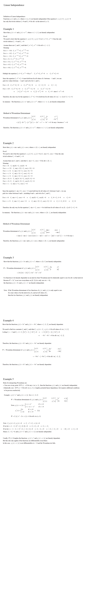


<!DOCTYPE html>

<html lang="en">
    <head>
        <meta charset="utf-8" />
        <title>Linear_Independence</title>
        <style type="text/css">
            input:focus {background-color: beige; border-style: solid;border-color: #0026ff;border-width: 2px}
            input{background-color: beige;}
        </style> 
   
   
        <script type="text/javascript">

        </script>
    </head>

    <body onload="">        
    </body>
</html>


<span id="SectionSpan" style="font-size:34px">
   Differential Equations &nbsp;&nbsp;&nbsp;&nbsp;&nbsp; 
   Linear_Independence<br>
   <!---------  ′ ″    ‴   ∙       π 

                   ∫  ∂  ∆  ∇  ℝ  ≤  ≥  ±  ≠  ÷  ×  ƒ⁻¹  ¹  ²  ³  ⁴  ⁵  ⁶  ⁷  ⁸  ⁹   ⁰  Ø  ₀  ₁  ₂  ₃  ₄  ₅  ₆  ₇  ₈  ₉  ⁽ ⁾   ⁱ  ⁿ   ⁺   ⁻   ∈  ∉  ≈  ∘  ∙

         ′  ″  ‴  ∞  x²  x³  x⁴   x⁵   x⁶    x⁷    √   ∛    ∜   →  ⁺  ⁻   ↓   ↔   ⇒   ⇔   ∩   ∪   α β γ δ ε ζ η θ ι κ λ μ ν ξ ο π ς ρ σ τ υ φ χ ψ ω Δ Π Σ Φ Ψ Ω Γ

</span> 
<br><br>
<span style="font-size:24px">
   Objective: Solve second-order linear differential equations of the form  <i>a∙y″</i> + <i>b∙y′</i> + <i>c∙y</i> = 0 <br>


   <br><br>      
   <a href="DiffEqu_Lesson09Rubric.pdf" target="DiffEqu_Lesson09Rubric"  style="margin-left:30px"> </a> 
</span> 
 -------------------->


<br><br><br><br>
<!----- Homework  ------->

<br>


<br><br><br><br><br><br><br><br><br><br><br><br>
<br><br><br><br><br><br><br><br><br><br><br><br>
<br><br><br><br><br><br><br><br><br><br><br><br>


<br><br><br><br>
